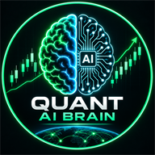

AI Market IntelligenceAI Market Intelligence turns raw price data into clear, actionable insight — regime detection, quantitative strategy research and systematic analysis for FX, gold and index markets.
We apply machine learning and rigorous statistics to the markets — so decisions rest on evidence, not opinion.
Markov-based regime detection that classifies markets as trending, ranging or volatile — and quantifies how likely each state is to persist.
Machine learning applied to price, volatility and macro data to surface patterns and relationships human analysis misses.
Rule-based strategies engineered end-to-end: entries, exits, risk controls and position sizing — built to be testable and repeatable.
Honest evaluation of any strategy: realistic costs, out-of-sample testing, walk-forward analysis and Monte Carlo stress tests.
Position sizing, drawdown control and portfolio construction — including modelling against prop-firm rules and account limits.
Clear, data-driven briefings on FX, gold and indices: current regime, key levels, statistical context and what actually matters.
Every insight we publish goes through the same disciplined pipeline.
Clean, verified market data — gap-checked, session-tagged and cost-adjusted before any analysis begins.
Statistical and machine-learning models built to answer one question precisely, not everything vaguely.
Out-of-sample tests, walk-forward analysis and stress testing — if it doesn't survive scrutiny, it doesn't ship.
Findings translated into plain language and clear, actionable intelligence you can actually use.
An algo portfolio run like a hedge fund — combining AI, quantitative research and algorithmic trading strategies, diversified across indices, commodities and FX pairs. Figures are shown net, in percent of equity.
Gold-marked months are simulated backtest results; teal-marked months are live account results.
| Date | Market | Side | Result |
|---|
Past performance is not indicative of future results. January – September 2026 figures are simulated (backtested) performance, which has inherent limitations and does not represent actual trading; live account results are shown from October 2026. Figures are net of costs, expressed as a percentage of account equity, and relate to closed positions only.
AI Market Intelligence was founded on a simple conviction: most market commentary is opinion dressed up as analysis. We do it differently — every view we take is grounded in data, tested statistically and stated with its uncertainty attached.
For enquiries about research, analysis or collaboration, get in touch.
AI Market Intelligence provides research and analysis for informational and educational purposes only. Nothing on this site constitutes financial advice or a recommendation to buy or sell any financial instrument. Trading involves substantial risk of loss.